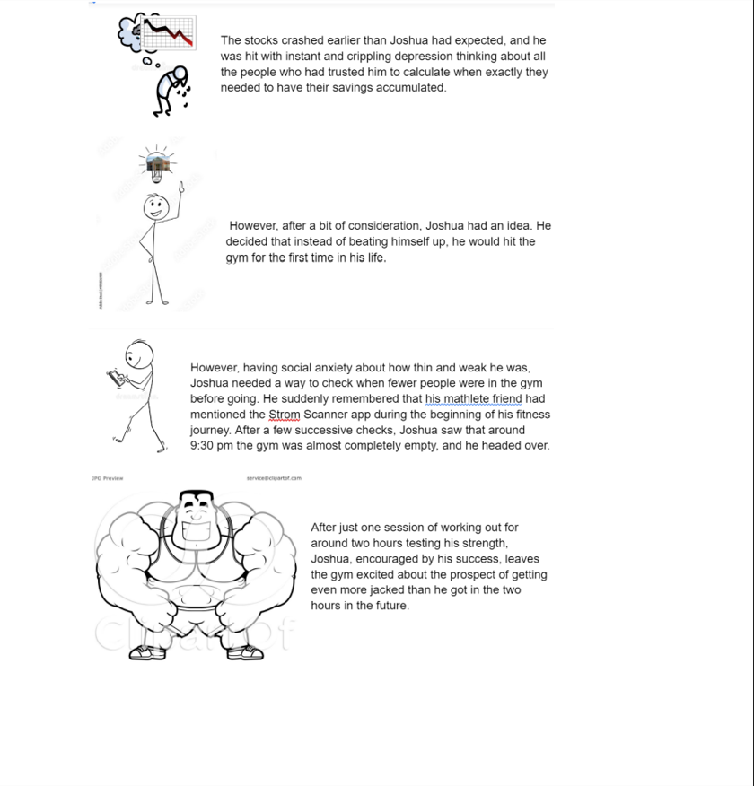
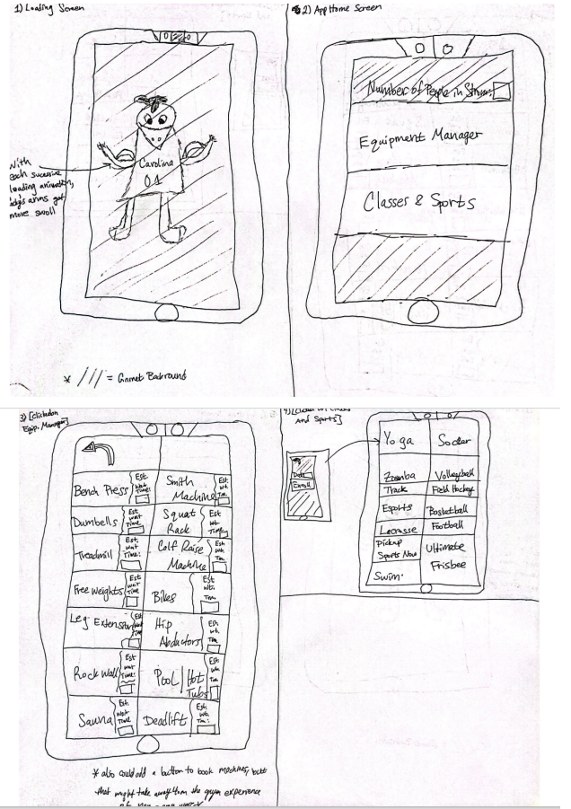
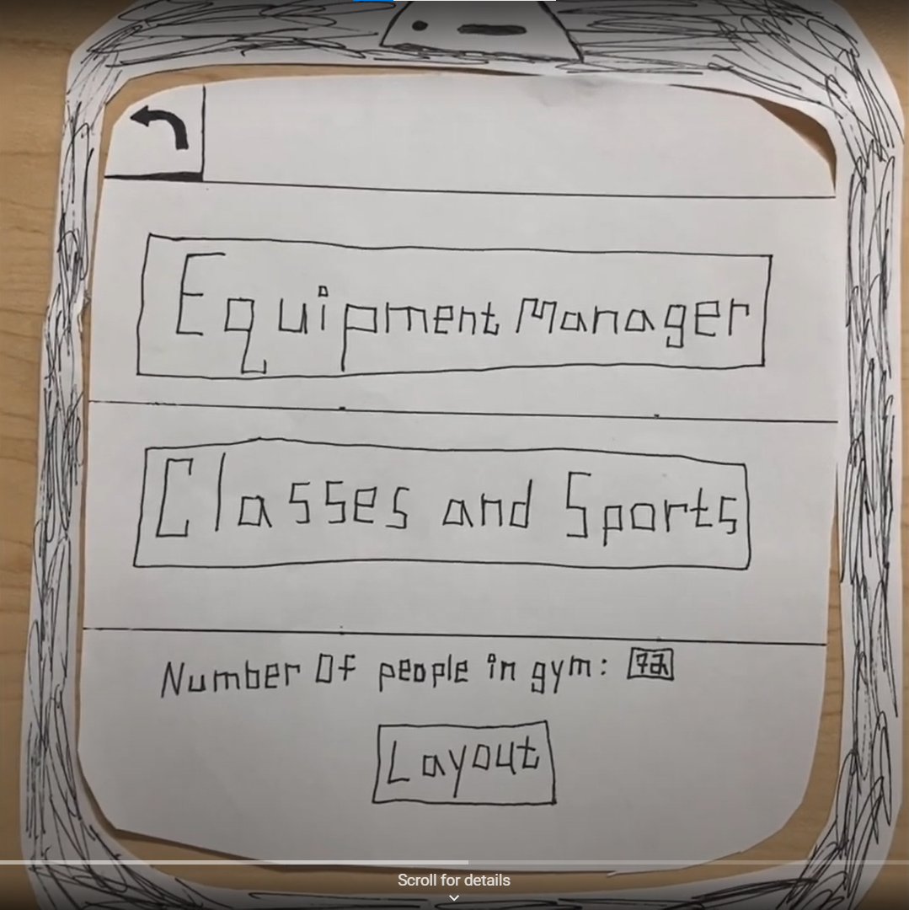
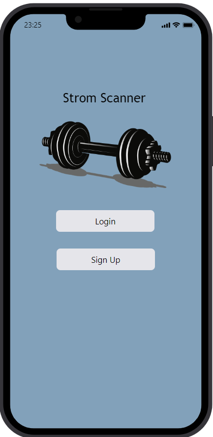

Problem Statement: Strom Thurmond Fitness Center

UofSC students are frustrated with crowd levels at the gym leaving equipment inaccessible. Our solution will provide users with a way to monitor crowds at the gym to find when the equipment they want to use is available.
Affinity Diagram: Strom Thurmond Fitness Center

Together, my group and I have created this diagram in order to brainstorm the necessary functions of our application based on equipment, events, and user base.
Personna: Joshua Maldista

A persona of typical Strom Thrumond Gym users.
Storyboards:App Users
Stories of how the Strom Thurmond Gym Application has impacted the lives of each persona.
Sketches
Sketches of the functions of the Strom Thurmond Gym Application.
Paper Prototype
A paper prototype of how the Strom Thrumond Recreational Center App would work.
Hi-Fi Prototype
A hypothetical fully functional hi-fi prototype of how the Strom Thrumond Recreational Center App would work.